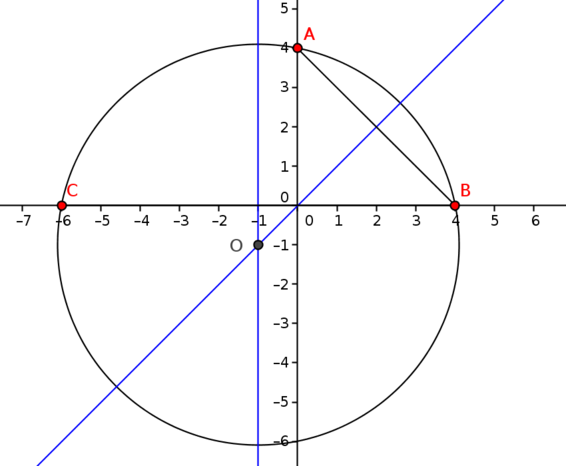
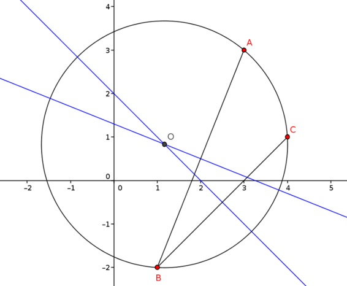

Here are some examples for you to try your ideas out on. For each set of three points, find the equation of the circle passing through them.
It is certainly worth sketching a graph to help you understand what is going on in each case!
Which of your approaches is the most effective?
A(3,2), B(3,6), C(5,8)
A(0,4), B(4,0), C(−6,0)
A(−1,−5), B(−2,2), C(2,−1)
A(3,3), B(1,−2), C(4,1)
Brief answers
(x−7)2+(y−4)2=20
(x+1)2+(y+1)2=26
(x+32)2+(y+32)2=252
(x−76)2+(y−56)2=14518
Full solutions
A(3,2), B(3,6), C(5,8)
A geometric approach
In the suggestion, we saw that the centre of the circle must be the same distant from A and B, and it turns out that those points which are lie on the perpendicular bisector of the line segment AB.
If we draw a diagram with a point P that is equidistant from A and B, and mark on the midpoint M of AB, we get the following:
The triangles AMP and BMP are congruent by side-side-side (SSS):
AMPAMP=BM=PB=MPM is midpoint of ABP is equidistant from A and B (given)common side
Therefore the angles ∠AMP and ∠BMP are equal. But together they form a straight line (180∘), so each angle is a right angle. Thus ∠AMP=90∘ and the point P lies on the perpendicular bisector of AB.
So if we draw the perpendicular bisector of AB, the circle’s centre must lie on it.
Likewise, if we draw the perpendicular bisector of AC or of BC, the circle’s centre must lie on that, too.
The point where these perpendicular bisectors meet must therefore be the centre of the circle through the points A, B and C.
This GeoGebra applet shows how this works for this question; you can move the points A, B and C if you wish.
We can now see that the perpendicular bisector of AB is going to be the line y=4 since A and B have the same x-coordinate.
The perpendicular bisector of the chord BC passes through the midpoint of BC, which is (4,7). (The midpoint of a line between two points can be found by averaging the coordinates of the two points: its coordinates are half way between the coordinates of B and C.)
The gradient of line through the points B and C is
m=8−65−3=22=1,
so the gradient of the line perpendicular to that is
m′=−1m=−11=−1
(the negative reciprocal of m).
The equation of this second perpendicular bisector is therefore
⟹y−7y=−(x−4)=11−x.
We now need to find the point of intersection of these two lines as this is the centre of our circle. Solving the equations y=4 and y=11−x simultaneously gives the coordinates of their intersection, which is O(7,4). Finally, we want the radius of our circle so we work out the length |OA|:
Incidentally, note that as the equation for the circle only needs r2 and not r itself, we could have found r2=|OA|2 and dispensed with all square roots. We will do this from now on in this question.
An algebraic approach
Following the suggestion, we substitute for x and y in the equation (x−a)2+(y−b)2=r2 for our three coordinates to find a, b and r. This gives us the following three simultaneous equations:
Substituting our values for a and b into (1) we find the value of r2:
r2=(3−7)2+(2−4)2=16+4=20.
Therefore the equation of the circle is
(x−7)2+(y−4)2=20.
Which method is quicker/easier here?
By virtue of the fact we can write down one of the perpendicular bisectors by inspection, probably the geometric method here.
A(0,4), B(4,0), C(−6,0)

Geometric, perpendicular bisector method
The midpoint of AB is (2,2), so the perpendicular bisector passes through this point. The gradient of AB is −1, so the perpendicular bisector has gradient −1/−1=1 and thus the equation of the perpendicular bisector is
y−2=1(x−2)⟹y=x,
as is apparent from the sketch. Similarly, the perpendicular bisector of the chord BC is the line x=−1. Thus the point of intersection, and the centre of the circle, is O(−1,−1). We work out the length |OA| to find the (square of the) radius:
r2=|OA|2=(−1−0)2+(−1−4)2=26
so the equation of our circle through the points A, B and C is
(x+1)2+(y+1)2=26.
Algebraic, simultaneous equations method
Substituting the coordinates A, B and C into the general equation for a circle and expanding the brackets as in part (a), we find
Substitute this value for into equation (14) to find
−8a+6×(−32)+3=0⟹8a=−12⟹a=−32.
(Alternatively, halving equation (13) gives a−7b−9=0, so a=7b+9=−32.)
The radius is then given by
r2=(−1+32)2+(−5+32)2=14+494=252
and the final equation of the circle is
(x+32)2+(y+32)2=252.
Note that we can save ourselves a lot of effort by converting all fractions from mixed fractions like 412 to 92 straightaway - this trick saves time when we are manipulating a lot of fractions.
Which method is quicker/easier here?
Tough call - which do you prefer?
It is interesting to notice that in the diagram for this part, the centre of the circle appears to lie on the chord AB. Is this really the case?
If the centre does lie on AB, then AB is a diameter, and therefore the angle ∠ACB would have to be a right angle, as angles in semicircles are right angles. And the converse is true, too: if ∠ACB is a right angle, then AB is a diameter. So we need only check whether AC and CB are perpendicular, and we can do this by calculating their gradients.
The gradient of AC is −1−(−5)2−(−1)=43, and we have already calculated that the gradient of CB is −34. These multiply to −1 and so they are perpendicular.
It follows that the centre of the circle is the midpoint of AB, which is (−32,−32), as we found earlier.
A(3,3), B(1,−2), C(4,1)

Geometric, perpendicular bisector method
The midpoint of AB is (2,12) and the gradient of AB is 3−(−2)3−1=52. Thus the equation of the first perpendicular bisector is
y−12=−25(x−2)
which can be rearranged to give y=−25x+1310.
Likewise, the midpoint of BC is (52,−12) and its gradient is −2−11−4=1. The equation of the second perpendicular bisector is therefore
y+12=−1(x−52)
which gives y=2−x.
The two lines intersect when
⟹⟹−25x+131035xx=2−x=710=76.
Substituting into the equation of the second perpendicular bisector we find
y=2−76=56.
Thus the centre of the circle is O(76,56) and the radius is given by